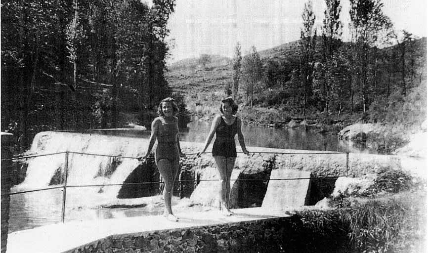
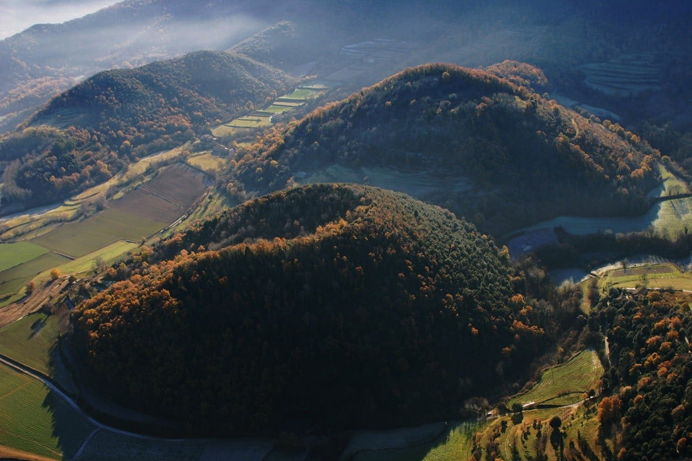

La Familia Soms
La família Soms, amb arrels profundament ancorades en la terra fèrtil de La Garrotxa, ha estat sempre sinònim de valentia, emprenedoria i aventura. Des de temps immemorials, aquesta estirp ha combinat la seva passió pel comerç amb un esperit intrèpid, explorant noves terres i establint rutes comercials que han enllaçat els racons més remots amb el cor de Catalunya. Generació rere generació, els Soms han sabut adaptar-se als canvis del temps, transformant els desafiaments en oportunitats. Com a comerciants, van ser pioners en l'introducció de productes exòtics a la regió, enriquint així la cultura i la gastronomia locals. Com a emprenedors, han impulsat iniciatives que han fomentat el desenvolupament econòmic de La Garrotxa, sempre amb un profund respecte pel medi ambient i la sostenibilitat. I com a aventurers, les seves històries d'exploracions llunyanes han alimentat llegendes que encara avui es narren al voltant del foc en les fresques nits de la comarca. El llegat dels Soms és un teixit ric de coratge, innovació i un inquebrantable amor per la seva terra, marcant el camí per a les futures generacions que segueixen el seu exemple.
Descobreix la riquesa de la família Soms, la seva herència cultural i el vincle profund amb la Garrotxa.
Les Tietes de Sant Roc
La Carme i la Maria, dues germanes nascudes a l'ombra dels volcans de La Garrotxa, van esdevenir figures clau en el teixit emprenedor i comercial de la regió. Des d'una edat primerenca, es van destacar per la seva visió avantguardista i un esperit inquebrantablement feminista, decidides a trencar les barreres en un món dominat pels homes. Amb una passió per l'innovació i un compromís profund amb la igualtat de gènere, van fundar una sèrie d'empreses que no només van prosperar econòmicament sinó que també van servir com a plataformes per a l'empoderament de les dones dins i fora de la comunitat. La seva visió empresarial es va estendre més enllà dels límits tradicionals, explorant des de noves tècniques agrícoles fins a iniciatives de comerç just, sempre amb el focus posat en la sostenibilitat i l'equitat. Les germanes van esdevenir un símbol de progrés i resiliència, deixant un llegat impereceder que va inspirar generacions futures a perseguir els seus somnis amb valentia i a lluitar per un món més just i igualitari.

D'esquerra a dreta, la tieta Carme i la tieta Maria, al Fluvià a
l'alçada de Can Basil.
La primera a d'alt a l'esquerra, la tieta Carme. Abaix, la segona
començant per l'esquerra, la tieta Maria. Foto del Centre
excursionista Olot (CEO)
La Garrotxa
El terme "garrotxa" prové del català antic i es refereix a un relleu abrupte i de roques, "aspre, trencat i de mal trepitjar". Avui dia, aquesta definició ni es digna a aparèixer als diccionaris actuals perquè ningú usa la paraula per a definir un territori, però es manté en la denominació d'una de les comarques més especials i boniques de Catalunya. Al nord de Girona, amb la serralada dels Pirineus a punt d'entrar en escena, La Garrotxa neix com un dels paratges més fèrtils de tota la Península Ibèrica. Un territori verd que deixa espai a res menys que quaranta-dos volcans, extensos fagedes de conte, fermosos cingles de basalt i prats esquitxats de masies centenàries. O una xarxa de viles i pobles medievals amb l'encant suficient com per convertir-se en autèntiques màquines del temps i fer-nos tornar a l'època dels senyors feudals i els remences. Racons de romànic pur els quals els capitells són capaços de narrar diversos llibres alhora sense haver de passar una sola pàgina.
El parlar de la Garrotxa
El parlar de la Garrotxa o garrotxí és la varietat del català parlada en aquesta comarca. Pertany al subdialecte català septentrional de transició i, per tant, presenta trets comuns tant amb el català central com amb el català septentrional. Els particularismes del garrotxí es deuen en part al relatiu aïllament geogràfic en què ha viscut la comarca al llarg dels segles, però també als estrets vincles històrics amb el Vallespir. Malgrat les diferències que encara perviuen entre la parla de l'Alta Garrotxa i els encontorns d'Olot, la capital de la comarca ha exercit un paper cohesionador d'aquest parlar. Com en altres parlars septentrionals de transició, durant les últimes dècades es constata una interrupció de la transmissió generacional d'alguns trets propis del garrotxí; aquest fenomen s'ha atribuït a l'augment de la mobilitat dels parlants més joves i a la pressió de formes centrals o estàndard a través de l'ensenyança i els mitjans de comunicació.
Lèxic
El lèxic propi del garrotxí és vastíssim. Algunes paraules típiques i d'ús freqüent són les següents: arreveixinar-se ('refer-se d'una malaltia'), barrumera ('bromera'), becus ('ecs'), botzinar ('rondinar'), caçar ('cercar'), carica ('cara trista o llarga'), castís ('trempat'), de cent en celis ('de tant en tant'), al cim de ('damunt'), condeir ('péixer'), conill ('despullat'), corrou ('corró'), cresent ('obedient'), desatent ('desfici'), empardalar-se ('enamorar-se'), entrebanqueta ('traveta'), estimberri ('cingle'), gardela ('bufetada'), peixixa ('paciència'), quets ('sabatilles esportives'), talaiar ('vigilar', sobretot la mainada), tita carmellosa o carmellera ('gall dindi'), torraina ('moc sec'), tou ('begut'). Una de les particularitats que més criden l'atenció dels forasters és l'ús abundant i amb múltiples sentits del verb cardar on altres dialectes prefereixen fotre.
Llegir més a la Viquipèdia